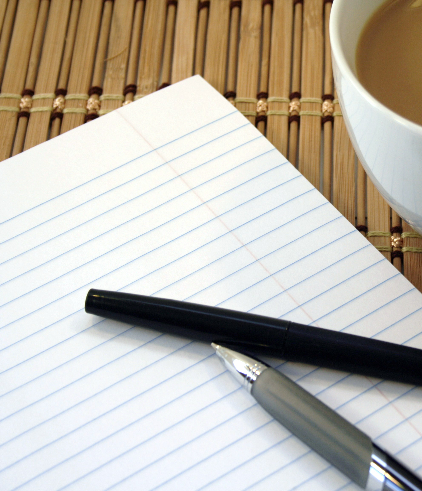

Curriculum Vitae
Jobs - In 2014 I worked 6 days a week as a paper boy for a year, after I turned 18 I got a job at a local bar but after I moved to Aberdeen I needed to give it up.
Hobbies - I enjoy rifle shooting, going out with my mates and microwaving butterflies.
Achievements - My best achievements are in target rifle shooting as I am in the national team for it and represent Scotland. I have managed to get a couple medals in intenational competitions thought this year I want to win one.